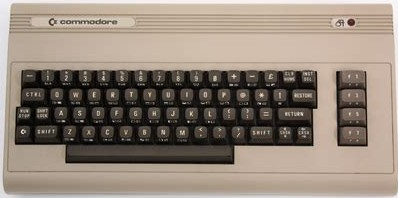

About Me

I was born in Ohio and then grew up in Chicago. As far as my career went I started out as draftsman and was going to be an Architect. I was going to be the next Frank Lloyd Wright, That didn't work out for me so I went to work in an engineering department. I ended up moving to St. Louis and eventually I found interest in computers. My first computer was a Commodore 64.
I learned to do some programming on it and found there was so much to learn with this computer. My job at the time was just getting into computers and I volunteered to join the IT department and started programming there. Well one thing led to another and I became the IT Manager at about 3 different companies. I have retired from the IT industry and now reside in Florida. I now help people out with their computer issues and run my own mail server and am working on this website.
My Work
More to come.